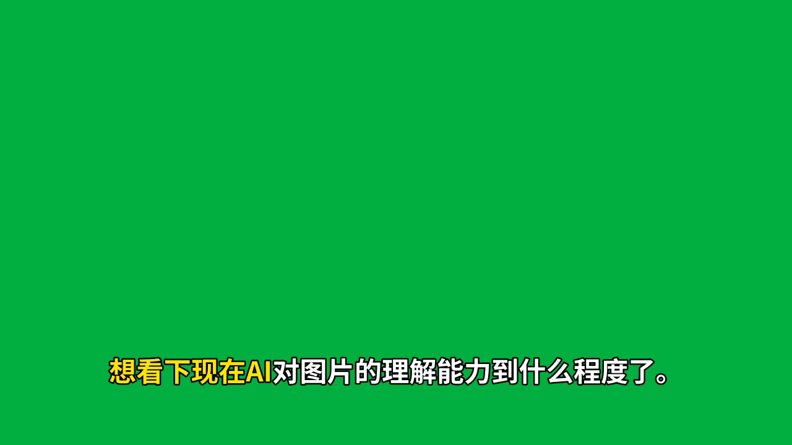
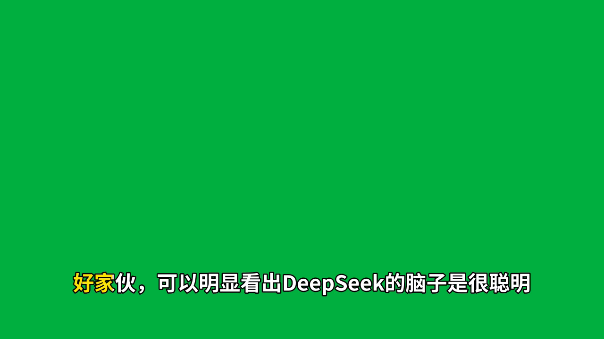
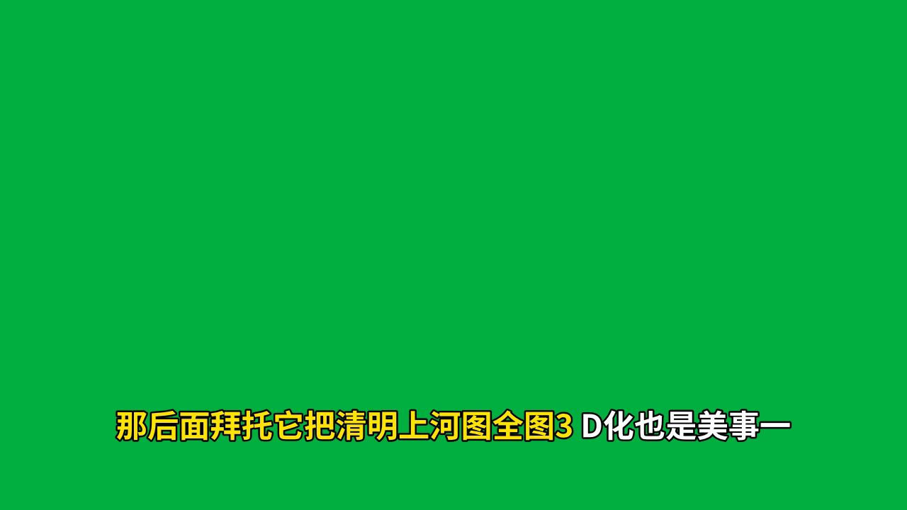

edge-tts 的 WordBoundary 事件直接给出每个词的真实起止时间，零 ASR 误差——最准的一条路。
想看下现在AI对图片的理解能力 到什么程度了。

不用手打稿、不用对齐工具——faster-whisper 直接听写并给出逐词时间轴。

只要你的对齐工具能输出 words.json（Audio2Subtitles、WhisperX、自研对齐都行），subreel 只负责画。
{
"words": [
{"text": "那后面拜托它把清明上河图",
"start": 12.34, "end": 15.12},
{"text": "全图3D化也是美事一桩",
"start": 15.12, "end": 17.60}
]
}
